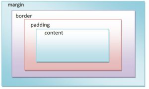

Üsttek linkli başlığımın rengi yeşil ve altı çizili olmalıydı.Cssteki alttaki kod sayesinde bunu yapabildim.Yorum satırı olarak bulabilirsiniz.
Neden body bgcolorda texte yeşil vermemize rağmen divler kırmızı çünkü csste div parantezi altında kırmızı yaptık.Hemen alta koyuyorum kodu.
Bu İkinci Başlık
Gerçekte üstteki başlığımız yeşil olması lazımdı kodumuzda öyle yazıyor ama neden olmadı?
Csste h1 id ile baslik dedik ve renk ve boyut belirttik onlardan farklı oldu .
Üstteki ikinci başlık h1 id ile css sayesinde yapıldı.
Bu Bir Div Metnidir
Bu bir div metnidir dedik burada div class kullandık.
Biraz işin mantığına inmek istiyorum.
Üsste mor yazdığım yazının yazı tipini font family kodu ile değiştirdik.
Class ve id arasındaki farklar class birçok kez id kodda tek bir defa tanımlanır.
Örnek olarak bir kitap için özel oluşturufan raflara id diyoruz.
Rafların ebatı,yazı tipi,rengi bunların detaylı şekilde yapılması da class ile.Css mantığı var ama.
Font style italic gibi eğik yazma araçlarını bulundurur.
Son olarak font weight yazıyı kalınlaştırır.Başlığı kalınlaştırmaz.
Line height satır yüksekliğini belirler.
Word spacing kelimelerin arasındaki boşluğu belirler.
Letter spacing harfler arasındaki boşluğu belirler.
Text align paragrafların nereye yaslanacağını belirler.Center ve right gibi.
Text decoration belirtilen alandaki yazıların çizgi ile desteklenerek yazılmasıdır.
Text transform belirtilen alandaki yazıların büyük ,küçük veya baş harflerinin büyük yazılmasını sağlar.
Text indent belirtilen alandaki yazının verilen değere göre içeriden başlaması için kullanılan komuttur.
Arka plan rengi için background coloru kullanıyoruz istersek rengini rgb sayesinde yarı saydam yapabiliriz
İstediğimiz yere bir kutu dahilinde fotoğraf koymak için background-image kodunu kullanıyoruz.İçinde width,height,border,margin ayarlanabilecek özellikler var.
Background repeat kodumuz fotoğrafımızın tekrarlanıp tekrarlanmayacağını hangi yerlerde olacağını belirtir
Background position resmimizin pozisyonunu belirler.Mesela center ortalar.Top belirtilen alanın en üstüne çıkarır fotoğrafımızı.
Background size resim kendini tam sığacak şekilde sığdırır.Contain resmin kendinin gerçek değeri kadar yer kaplamasını sağlar.
BAŞLIK
Border belirli alanda kenarlık oluşturmak için kullandığımız koddur.
Border radius kutumuzun köşesini daha kıvrımlı yapmamızı sağlar.
Kutu 1
Kutu 2
Kutu 3
Kutu 4
Box shadow gölgelendirmeyi sağlar.
Paragrafım bu.
Border width Kenar çizgi genişliği-kalınlığıdır.
Border style kenar çizgi biçemidir.
Border color kenar çizgi rengidir.
Margin özelliği
Margin özelliği
Padding Özelliği
Margin , dış kenar boşluğu demektir. Element(content) kenarının dışında boşluk oluşturur. Üst, alt, sağ ve soldan boşluk verilebilir.
Padding, iç boşluk demektir. CSS’te padding özelliğini içeriğin etrafında boşluk oluşturmak için kullanırız.

Üstteki fotoğrafta farkını görebilirsiniz.Biraz değişik benim de kafamı karıştırıyor.Neyse devam.
Width ve height değerlerime eğer başına min etiketini getirirsek içine sığacak boşluğu bize sağlar.Ama eğer max yada normal halde bırakırsak yine metnimiz taşar.
Floatuna right verdiğim tablo sağa yaslandı bu özelliği unutmayalım.
Eğer overflow hidden etiketini kullanırsak paragrafımızın sığacağı kadarını içine alır.Eğer scroll değer verisek direkt bir site gibi gezebileceğimiz bir kutu oluşur.
Position,z-index,display,visibility özellikleri bu derste anlatıldığı gibidir.